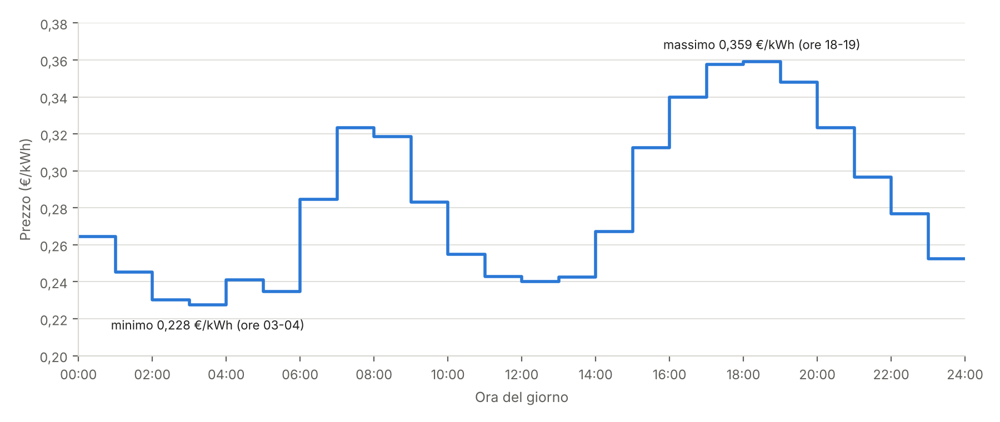
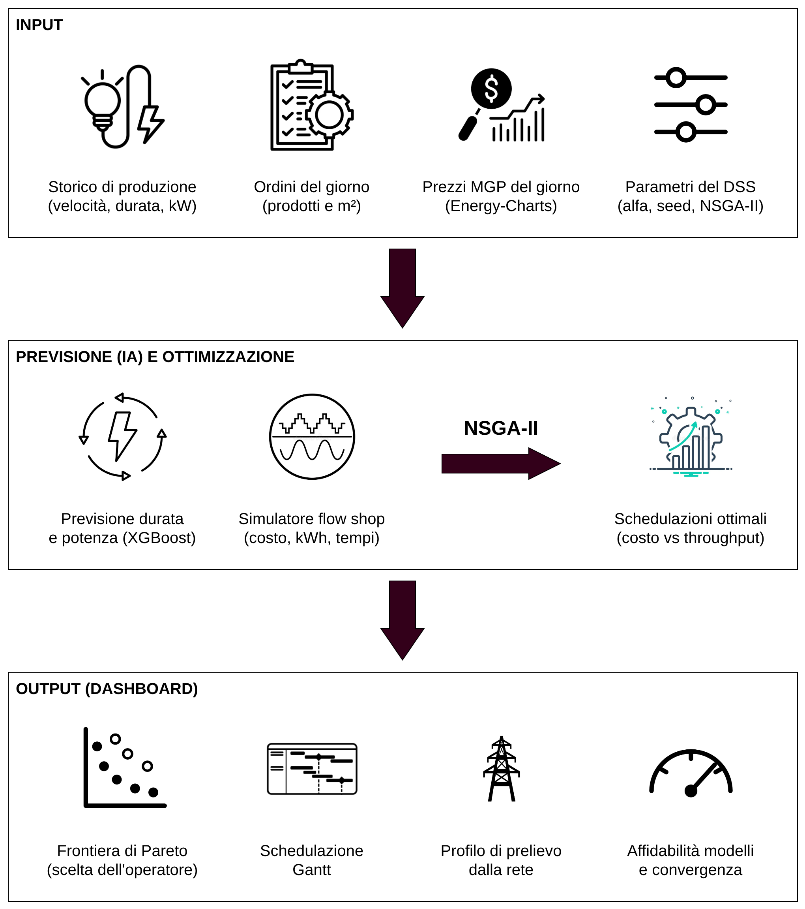
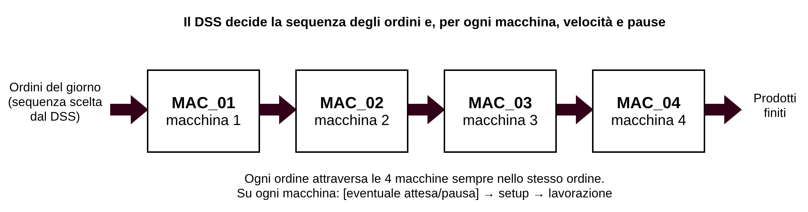
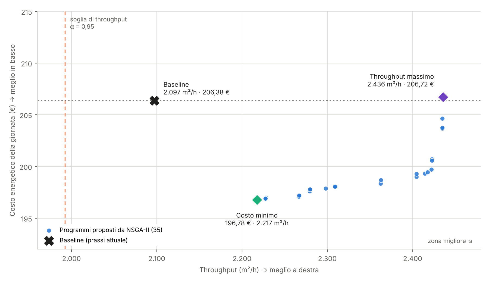
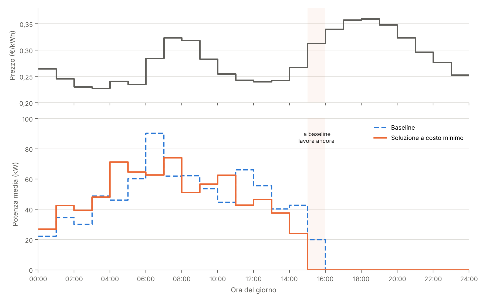
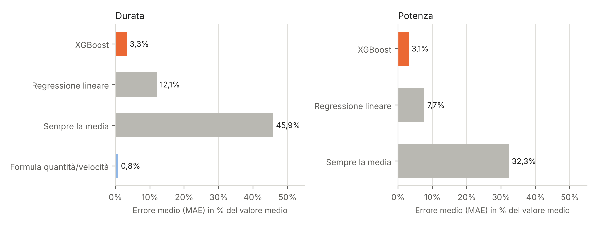
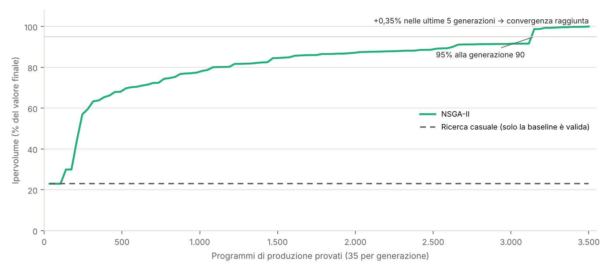
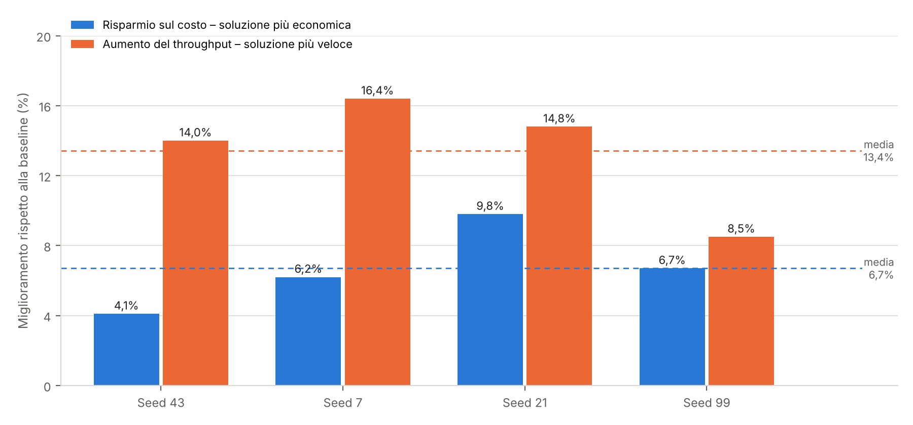

1 · Panoramica
Quando si produce cambia quanto si spende
Il prezzo dell’energia all’ingrosso varia ogni ora: il 6 novembre 2026, zona Sud, tra l’ora più economica e la più cara c’è il 58% di differenza. Le macchine consumano anche da ferme, durante setup, attese e pause.
DSS Flow Shop propone più programmi di produzione per la giornata, agendo su tre variabili decisionali. Gli obiettivi sono due e in conflitto, minimizzare il costo energetico e massimizzare il throughput (m²/h), con due vincoli: completare la produzione entro 24 ore e non scendere sotto una soglia di throughput rispetto alla prassi attuale. Il sistema restituisce la frontiera di Pareto delle soluzioni non dominate: la scelta finale resta all’operatore.

Sequenza
In che ordine lavorare gli ordini del giorno.
Velocità
Per ogni ordine su ogni macchina: più veloce finisce prima ma assorbe più potenza.
Pause
Attese facoltative tra un ordine e l’altro, per spostare lavorazioni in ore meno care.
2 · Architettura
Architettura del sistema
Un’unica applicazione web in Python: il server FastAPI contiene previsione, simulazione e ottimizzazione e serve la dashboard. Tutto open source ed eseguito in locale.

Input
Storico di produzione, ordini del giorno, prezzi MGP scaricati da Energy-Charts per data e zona, parametri del DSS (α, seed, NSGA-II).
Previsione e ottimizzazione
Due modelli XGBoost stimano durata e potenza di ogni lavorazione; il simulatore calcola tempi, consumi e costo di un programma; NSGA-II cerca le soluzioni non dominate.
Output
Dashboard web: frontiera di Pareto, Gantt della soluzione scelta, profilo di prelievo dalla rete, affidabilità dei modelli e convergenza.
Stack: Python, FastAPI, XGBoost, scikit-learn, pymoo, Apache ECharts.
3 · Funzionamento
Le sei fasi di un’ottimizzazione
Con la configurazione di riferimento un’ottimizzazione completa richiede circa 15 secondi. A parità di configurazione e seed i risultati sono identici: ogni sessione salva anche la configurazione usata.
- DatiStorico, ordini del giorno, setup e velocità tipiche
- ModelliAddestramento di XGBoost e misura dell’errore su dati di test
- BaselineSimulazione della prassi attuale: ordine di arrivo, velocità medie
- NSGA-II3.500 programmi valutati, si tengono i non dominati
- VerificaConvergenza (ipervolume) e confronto con la ricerca casuale
- RisultatiSessione salvata e mostrata nella dashboard

Modelli di previsione
XGBoost
Due regressori, uno per la durata e uno per la potenza: con prezzi orari serve sapere non solo quanta energia si consuma, ma quando. Input: velocità, quantità, prodotto e macchina (one-hot), 11 colonne. Ogni modello è un ensemble di 25 alberi di profondità 3.
Ottimizzazione
NSGA-II
Un programma è codificato in 41 variabili: 5 chiavi di sequenza, 20 velocità, 16 pause. Popolazione di 35 individui per 100 generazioni; la baseline è nella popolazione iniziale. I vincoli sono normalizzati sul proprio limite.
4 · Risultati
Meno costo e più throughput rispetto alla prassi attuale
Configurazione di riferimento: seed 43, α = 0,95, prezzi MGP del 06/11/2026 zona Sud, NSGA-II 35 × 100. Lo storico di produzione è generato da un simulatore; i prezzi sono reali.

| Grandezza | Baseline | Costo minimo | Throughput massimo |
|---|---|---|---|
| Costo | 206,38 € | 196,78 € (−4,7%) | 206,72 € (+0,2%) |
| Throughput | 2.097 m²/h | 2.217 m²/h (+5,7%) | 2.436 m²/h (+16,1%) |
| Makespan | 15,9 h | 15,0 h (−5,4%) | 13,7 h (−13,9%) |




5 · Limiti e sviluppi
Dal prototipo all’uso in un contesto produttivo reale
Limiti
- Storico di produzione generato da un simulatore
- Consumo a macchina ferma fisso e nessuno spegnimento nelle pause
- Setup indipendente dalla sequenza; niente turni, manutenzioni, imprevisti
- Prove su una sola curva di prezzo e poche giornate
- Uso locale: API senza autenticazione
Sviluppi futuri
- Dati reali tramite IoT: contatori di energia e segnali delle macchine
- Rischedulazione durante la giornata, verso un Digital Twin
- Previsione dei prezzi, fotovoltaico e accumulo aziendali
- Setup dipendenti dalla sequenza, turni, più giornate e più esecuzioni
6 · Repository
Codice sorgente
DSS Flow Shop
L’intero sistema: backend FastAPI, modelli XGBoost, simulatore, ottimizzazione NSGA-II e dashboard web. Il README contiene installazione, avvio e configurazione.
perfez-2526-DSSFlowShop-Mammino
Vai al repository
7 · Riferimenti
Strumenti e fonti
- Energy-Charts (Fraunhofer ISE): prezzi del Mercato del Giorno Prima
- XGBoost: modelli di previsione di durata e potenza
- pymoo: implementazione di NSGA-II
- K. Deb et al., «A fast and elitist multiobjective genetic algorithm: NSGA-II», IEEE Transactions on Evolutionary Computation, 2002
- FastAPI e Apache ECharts: server web e grafici della dashboard